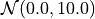
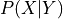
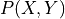

Learning Methods¶
-
class
pracmln.MLNLearn(config=None, **params)¶ Wrapper class for learning using a PRACMLN configuration.
- Parameters
config – Instance of a
pracmln.PRACMLNConfigclass representing a serialized configuration. Any parameter in the config object can be overwritten by a respective entry in theparamsdict.- Example
>>> conf = PRACMLNConfig('path/to/config/file') # overrides the MLN and database to be used. >>> learn = MLNLearn(conf, mln=newmln, db=newdb)
See also
pracmln.PRACMLNConfig-
property
db¶ The
pracmln.Databaseinstance to be used for learning.
-
property
discr_preds¶ Specifies whether the query predicates or the evidence predicates shall be used. In either case, the respective other case will be automatically determined, i.e. if a list of query predicates is specified and
disc_predsispracmln.QUERY_PREDS, then all other predicates will represent the evidence predicates and vice versa. Possible values arepracmln.QUERY_PREDSandpracmln.EVIDENCE_PREDS.
-
property
epreds¶ A list of predicate names specifying the evidence predicates in discriminative learning.
Note
This parameters only affects discriminative learning methods and is mutually exclusive with the
pracmln.MLNLearn.qpredsparameter.
-
property
grammar¶ String identifying the MLN syntax to be used. Allowed values are
'StandardGrammar'and'PRACGrammar'. Default is'PRACGrammar'.
-
property
ignore_unknown_preds¶ By default, if an atom occurs in a database that is not declared in the attached MLN, pracmln will raise a
NoSuchPredicateException. Ifignore_unknown_predsisTrue, undeclared predicates will just be ignored.
-
property
ignore_zero_weight_formulas¶ When formulas in MLNs get more complex, there might be the chance that some of the formulas retain a weight of zero (because of strong independence assumptions in the Learner, for instance). Since such formulas have no effect on the semantics of an MLN but on the runtime of inference, they can be omitted in the final learnt MLN by settings
ignore_zero_weight_formulastoTrue.
-
property
incremental¶ Specifies whether or incremental learning shall be enabled. Defaults to
False.Note
This parameter is currently unused.
-
property
logic¶ String identifying the logical calculus to be used in the MLN. Must be either
'FirstOrderLogic'or'FuzzyLogic'.Note
It is discouraged to use the
FuzzyLogiccalculus for learning MLNs. Default is'FirstOrderLogic'.
-
property
method¶ The string identifier of the learning method to use. Defaults to
'BPLL'.
-
property
mln¶ The
pracmln.MLNinstance to be used for learning.
-
property
multicore¶ Specifies if all cores of the CPU are to be used for learning. Default is
False.
-
property
output_filename¶ The name of the file the learnt MLN is to be saved to.
-
property
params¶ A dictionary of additional parameters that are specific to a particular learning algorithm.
-
property
pattern¶ A Unix file pattern determining the database files for learning.
-
property
prior_mean¶ The mean of the gaussian prior on the weights. Defaults to
0.0.
-
property
prior_stdev¶ The standard deviation of the prior on the weights. Defaults to
5.0.
-
property
profile¶ Specifies whether or not the Python profiler shall be used. This is convenient for debugging and optimizing your code in case you have developed own algorithms. Default is
False.
-
property
qpreds¶ A list of predicate names specifying the query predicates in discriminative learning.
Note
This parameters only affects discriminative learning methods and is mutually exclusive with the
pracmln.MLNLearn.epredsparameter.
-
property
save¶ Specifies whether or not the learnt MLN shall be saved to a file.
See also
-
property
shuffle¶ Specifies whether or not learning databases shall be shuffled before learning.
Note
This parameter is currently unused.
-
property
use_initial_weights¶ Specifies whether or not the weights of the formulas prior to learning shall be used as an initial guess for the optimizer. Default is
False.
-
property
use_prior¶ Boolean specifying whether or not to use a prio distribution for parameter learning. Defaults to
False
-
property
verbose¶ If
True, prints some useful output, status and progress information to the console. Default isFalse.
The above parameters are common for all learning algorithms. In addition, specific parameters can be handed over to specific algorithms, which will be introduced in the following.
General Parameters¶
- Gaussian prior on the formula weights:
This parameter enables MAP-learning (maximum-a-posteriori) with a Gaussian regularization term punishing large weights during learing, which can be controlled via the mean and the standard deviation of the Gaussian:
prior_stdev=<sigma>: the standard deviation of the prior
of the priorprior_mean=<mu>: the mean of the prior.
of the prior.use_prior=True/False: whether or not the prior should be used.
Typical values of a suitable prior are for example 
Generative Learning Methods¶
Log-likelihood Learning¶
The standard learning method using maximum likelihood.
Additional parameters:
optimizer: the optimization routine to be used.
Warning
Log-likelihood learning is intractable for most but the smallest examples. If you deal with realistic problems you should consider using a more efficient learning method.
Pseudo-likelihood Learning¶
Learner for the pseudo-log-likelihood learning algorithm.
optimizer: the optimization routine to be used.
Pseudo-likelihood Learning (with Custom Grounding)¶
If the formulas in your model are prevalently conjunctions of literals, this method should be preferred over the previous methods, since it processes such conjunctions in approximately linear time instead of exponential time.
optimizer: the optimization routine to be used.
Composite-likelihood Learning¶
Composite-likelihood Learning is a generalization of both log-likelihood and pseudo-log-likelihood learning, in that it partitions the set of variables in an MRF in subsets of sizes larger than 1, which leads to better accuracy of the learnt model. However, in the current implementation of pracmln, only partitions of size 1 are supported, in which case this method is equivalent to pseudo-log-likelihood learning, but comes with a slightly more efficient implementation.
optimizer: the optimization routine to be used.
Discriminative Learning Methods¶
For most of the likelihood-based learning methods, pracmln provides
discriminative variants, which are preferable if the reasoning
problem at hand exhibits dedicated input and output variables. Using
discriminative learning, one can learn conditional distributions
 instead of the join , which is favorable
with respect to model accuracy and computational performance. For all
discriminative algorithms, either a set of dedicated query or evidence
predicate needs to be specified, i.e.  or
or  in the
above distribution, depending on whether the predicates occur as
evidence or query variables. In addition to the parameters of their
generative variants, they have as additional parameters:
in the
above distribution, depending on whether the predicates occur as
evidence or query variables. In addition to the parameters of their
generative variants, they have as additional parameters:
qpreds: a list of predicate names that should be treatedas query variables during discriminative learning.
epreds: a list of predicate names that should be treatedas evidence variables during discriminative learning
discr_preds: One of the valuespracmln.EVIDENCE_PREDSorpracmln.QUERY_PREDS, specifying whetherqpredsor theepredsparameters should be used.
Discriminative log-likelihood Learning¶
Discriminative variant of log-likelihood learning.
optimizer: the optimization routine to be used.
Warning
Log-likelihood learning is intractable for most but the smallest examples. If you deal with realistic problems you should consider using a more efficient learning method.
Discriminative Pseudo-likelihood Learning¶
Discriminative learner for the pseudo-log-likelihood learning algorithm.
optimizer: the optimization routine to be used.
Discriminative Pseudo-likelihood Learning (with Custom Grounding)¶
Discriminative learner for the pseudo-log-likelihood learning with custom grounding.
optimizer: the optimization routine to be used.
Discriminative Composite-likelihood Learning¶
Discriminative variant of composite likelihood learning.
Optimization Techniques¶
In addition to the learning method, different optimization techniques
can be specified in pracmln. The type of the optimizer and their
parameters can be specified in the additional parameters text field
in the MLN-Learning-Tool by specifying a parameter optimizer=<algo>.
Currently, the following optimization techniques are supported.
BFGS (Broyden–Fletcher–Goldfarb–Shanno algorithm)¶
Command:
optimizer='bfgs'- Additional Parameters:
maxiter=<int>: Specifies the maximal number of gradient ascent steps.
Note
This is the standard SciPy implementation
Conjugate Gradient¶
Command:
optimizer='cg'- Additional Parameters:
maxiter=<int>: Specifies the maximal number of gradient ascent steps.
Note
This is the standard SciPy implementation